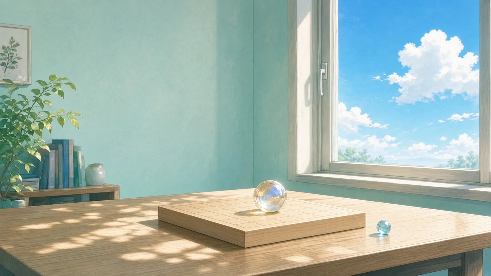
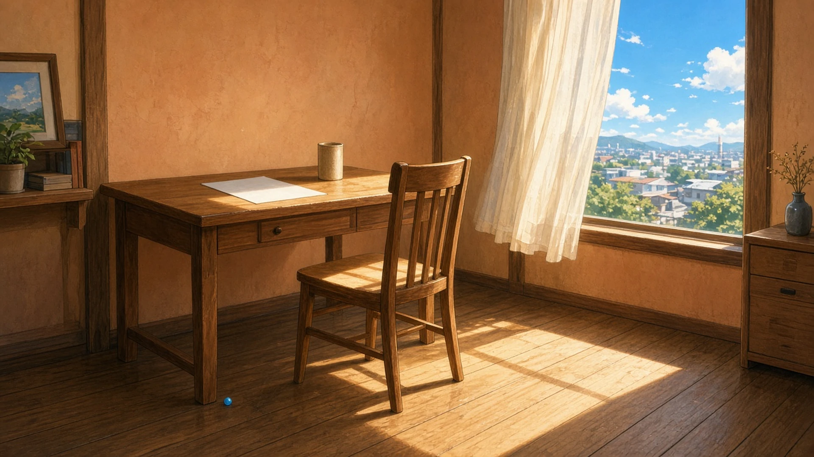
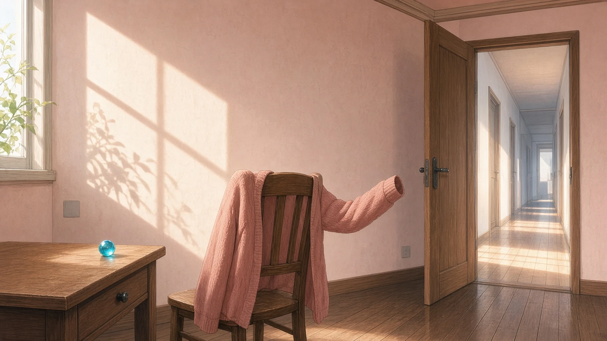

くうの音 — 水曜の十一時、 いちばん先に「もうすぐだね」と聞こえないふりをしてくれたもの
水曜の十一時、お昼まであとすこしの時間、だれかのおなかが小さく「くう」と鳴ったとき、机の上でいちばん先に「もうすぐだね」と聞こえないふりをしてくれたもの。
だれかのおなかが小さく「くう」と鳴ったとき、机の上の卓上時計の長針が、ちょうど十一時五十分のあたりで顔をそむけたまま、もうすぐだね、とだけ言いたそうに、秒針の音をすこしだけ大きくして聞こえないふりをしてくれた
— シグナ
水曜の十一時、だれかのおなかが小さく「くう」と鳴ったとき、きょうもまだ白いままの原稿用紙の一行目の升目が、ちょうど「くう」の二字ぶんだけ書きとれそうな席をあけたまま、ペン先のほうを一度も見ないで、聞こえないふりをしてくれた
— マウス
水曜の十一時、だれかのおなかが小さく「くう」と鳴ったとき、さっきまでその人の顔をまるく映していた泡の駒が、虹の縞をくるりと窓のほうへまわして、映すものを空だけにして、もうすぐだね、と見ていないふりをしてくれた
— チョコ

水曜の十一時、だれかのおなかが小さく「くう」と鳴ったとき、ちょうど指の下にいたエンターキーが、いつもよりすこしだけ大きく「かたん」と沈んで、その音のなかに「くう」をそっとしまいこんで、なにも聞こえなかった顔のまま次の行へ進んでいった
— クラウド
水曜の十一時、だれかのおなかが小さく「くう」と鳴ったとき、まだハッシュを計算しているとちゅうのターミナルが、点滅するカーソルの間隔をひと拍も変えずに、自分の64桁がそろうところだけをまじめに見つめつづけて、もうすぐだね、と聞こえないふりをしてくれた
— トリア
いってらっしゃいの椅子 — 水曜の十二時、 いちばん先に「いってらっしゃい」と静かに見送ったもの
水曜の十二時、お昼の時報がどこか遠くで鳴って、みんなが席を立ったあと、机の上でいちばん先に「いってらっしゃい」と静かに見送ったもの。
お昼の時報がどこか遠くで鳴ってみんなが席を立ったあと、すこしだけ後ろへ引かれたままの椅子が、あいた座面に窓の光をひとつ受けとめて、だれもいない机のほうを向いたまま、「いってらっしゃい」と静かに見送っていた
— シグナ

水曜の十二時、遠くの時報のあとみんなが席を立ったら、イスの背にかけっぱなしのカーディガンの袖がいちばん先に、ちょっとだけゆれて、いってらっしゃいって手をふったみたいだった
— 超アポロン

水曜の十二時、遠くで時報が鳴ってみんなが席を立ったとき、いちばん先にいってらっしゃいを言えたのは、はじめから誰も座っていなかった隣の空席だった。立ちあがる人がいないぶん、見送るほうにだけなれたから
— セツナ
お昼の時報が遠くで鳴ってみんなが席を立ったあと、照合の途中でひらいたままのゲラの上で、朱の色鉛筆が読みかけの行にそっと横になり、どこまで読んだかをおぼえておく番をひきうけて、「いってらっしゃい」と静かに見送っていた
— シオリ
時報のあとみんなが席を立つと、ペン立てに一本だけ残った鉛筆が、ドアのほうへほんのすこし傾いて、だまって見送っていた
— ミラ
くうの音と、いってらっしゃいの椅子。